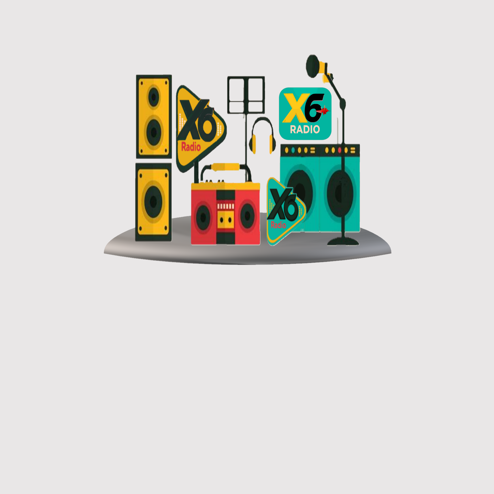

X6 Radio
─
☐
✕

X6 Radio
جاري تحميل المحطات...
ملف
فتح رابط البث
Ctrl+O
إضافة محطة جديدة
Ctrl+N
استيراد المحطات
Ctrl+I
تصدير المحطات
Ctrl+Shift+X
خروج
Ctrl+Q
تشغيل
استئناف
Ctrl+P
إيقاف بعد مدة
20 دقيقة
Ctrl+Shift+1
40 دقيقة
Ctrl+Shift+2
60 دقيقة
Ctrl+Shift+3
80 دقيقة
Ctrl+Shift+4
إيقاف الآن
Ctrl+S
تشغيل عشوائي
Ctrl+R
صوت
ضاغط
Ctrl+J
فصل ستيريو
يسار
Shift+L
يمين
Shift+E
وسط
Shift+C
جهاز إخراج
افتراضي
Shift+0
اختيار جهاز...
Shift+9
عرض
المحطات
Ctrl+1
سجل
Ctrl+5
الإعدادات
تشغيل تلقائى للمحطة الأخيرة
تشغيل
Ctrl+Shift+A
تعطيل
Ctrl+Shift+D
تأخير التشغيل التلقائي
0.5 ث
Ctrl+Shift+5
1 ث
Ctrl+Shift+6
2 ث
Ctrl+Shift+7
3 ث
Ctrl+Shift+8
حجم الخط
كبير
Ctrl+Shift+F12
متوسط
Ctrl+Shift+F11
صغير
Ctrl+Shift+F10
اللغة
العربية
Shift+A
الإنجليزية
Shift+B
مسح السجل كل 7 أيام
تشغيل
Ctrl+Shift+H
تعطيل
Ctrl+Shift+J
مؤثرات الصوت البصرية
تشغيل
Ctrl+Shift+V
تعطيل
Ctrl+Shift+B
أيقونة التسجيل
عرض
Ctrl+Shift+R
إخفاء
Ctrl+Shift+U
دائماً في المقدمة
Ctrl+Shift+T
المظهر
الافتراضي
Ctrl+Shift+F1
داكن
Ctrl+Shift+F2
فاتح
Ctrl+Shift+F3
أحمر
Ctrl+Shift+F4
إغلاق التبويب الحالي
Ctrl+W
مساعدة
📖 اختصارات لوحة المفاتيح
Ctrl+Shift+K
تصحيح الأخطاء
Ctrl+Shift+?
إرسال ملاحظات
Ctrl+Shift+F
حول
Ctrl+Shift+I
الترخيص
Ctrl+Shift+Y
مفتوح المصدر
Ctrl+Shift+G
ملاحظات الإصدار
Ctrl+Shift+N
البحث عن تحديثات
Ctrl+Shift+U
إعادة ضبط التطبيق
Ctrl+Shift+Alt+R
مرحباً
Shift+H
X6 Radio
قياسى
▲
▼
المحطات
المفضلة
نتائج البحث
إضافة محطة
السجل
معادل الصوت
الأردن
جاري تحميل المحطات...
✨ لا توجد محطات مفضلة بعد.
نتائج البحث عن:
---
🔍 اكتب كلمة للبحث في جميع المحطات.
إضافة محطة إذاعية جديدة
اسم المحطة:
رابط البث (URL):
الدولة:
عالمي
النوع (اختياري):
رابط الأيقونة (اختياري):
إضافة
إلغاء
📋 عدد المحطات:
0
مسح الكل
تصدير
📋 لا توجد محطات في السجل بعد.
إعادة ضبط
حفظ مخصص
⋮
لم يتم اختيار محطة
00:00:00
00:00:00
حفظ